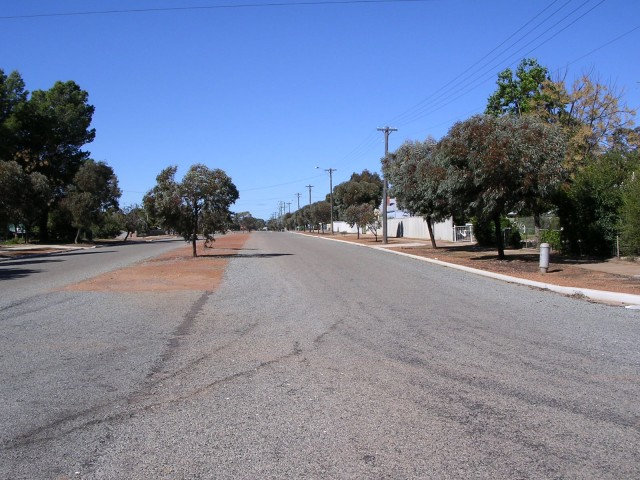
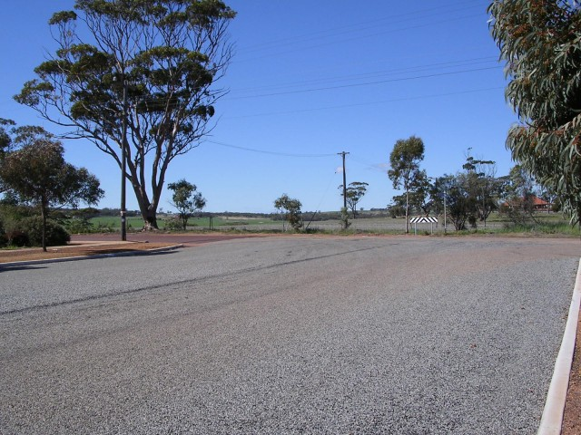
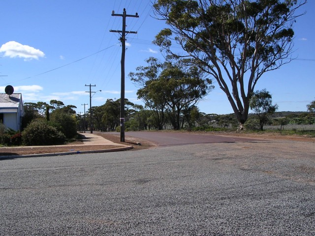
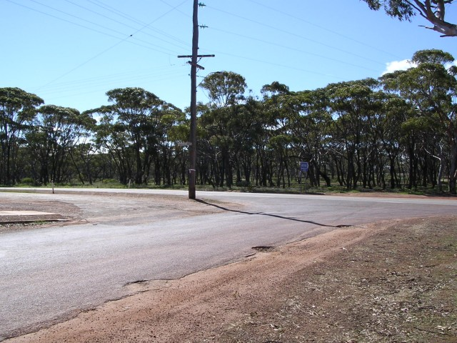
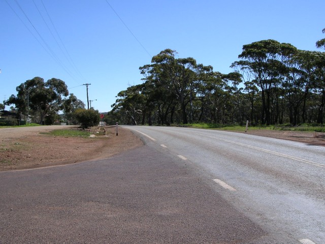
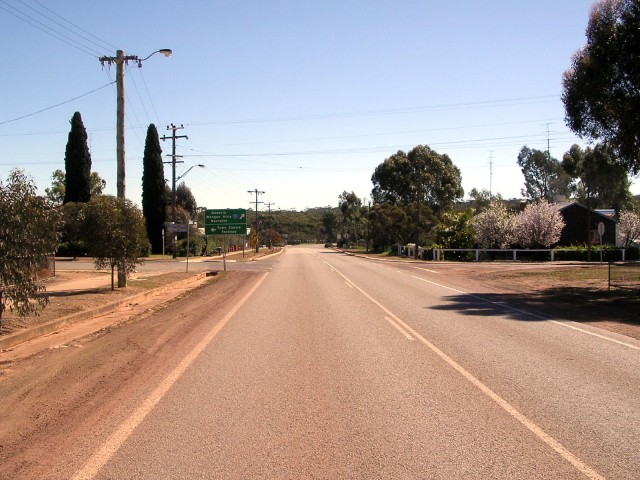
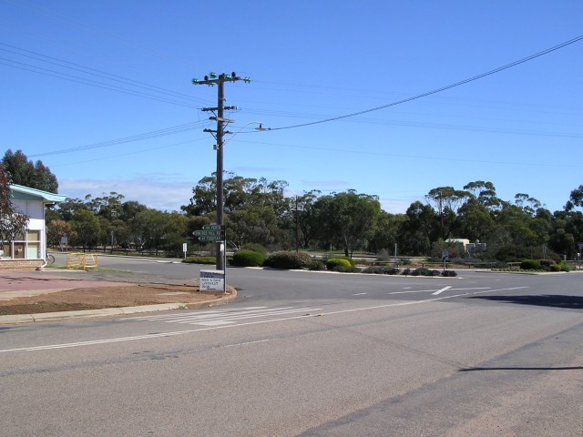
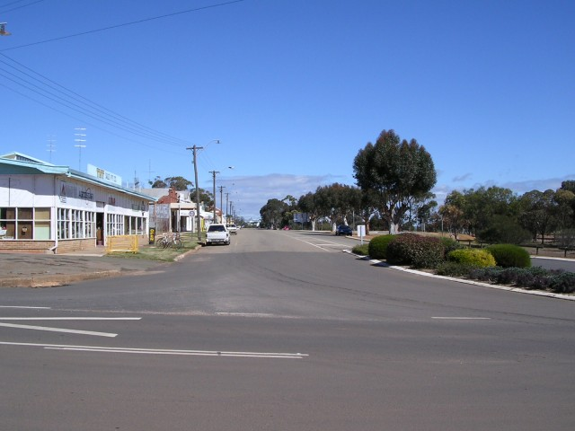

Numbers on the map represent the location where the photographs were taken. Scroll down to view the photographs.
Goomaling - Forrest St. via Eaton St. and Throssell St. to Railway Tce.
|| Contents || Railway / Lockyer / Qunilan / Forrest | Forward / James / High (1949) | Forrest / Eaton / Throssell / Railway || Home ||
Numbers on the map represent the location where the photographs were taken. Scroll
down to view the photographs.
Return to racingcircuits.net's Photo Archive Main Index

14 - Looking up Forrest Street.

15 - Turn left into Eaton Street from Forrest Street.

16 - Eaton Street.

17 - Left turn into Throssell Street.

18 - Start of Throssell Street.

19 - Contuning along Throssell Street.

20 - Left turn Throssell Street into Railway Tce.

21 - Railway Tce.
Photographs and Text ©Neil Fackerell. Reproduced here with kind permission.